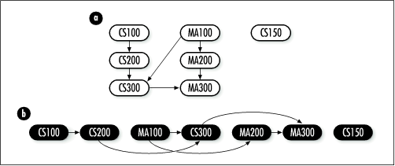

11.5 Graph Example: Topological
Sorting
Sometimes we encounter problems in
which we must determine an acceptable ordering by which to
carry out tasks that depend on one another. Imagine a set of
classes at a university that have prerequisites, or a
complicated project in which certain phases must be completed
before other phases can begin. To model problems like these,
we use a directed graph, called a precedence graph , in which
vertices represent tasks and edges represent dependencies
between them. To show a dependency, we draw an edge from the
task that must be completed first to the task that depends on
it.
For example, consider the directed
acyclic graph in Figure
11.9a, which represents a curriculum of seven courses and
their prerequisites: CS100 has no prerequisites, CS200
requires CS100, CS300 requires CS200 and MA100, MA100 has no
prerequisites, MA200 requires MA100, MA300 requires CS300 and
MA200, and CS150 has no prerequisites and is not a
prerequisite itself.

Depth-first search helps to determine an acceptable
ordering by performing a topological
sort on the courses. Topological sorting orders the
vertices in a directed acyclic graph
so that all edges go from left to right. In the problem
involving course prerequisites, this means that all
prerequisites will appear to the left of the courses that
require them (see Figure
11.9b). Formally, a topological sort of a directed acyclic
graph G = (V, E )
is a linear ordering of its vertices so that if an edge (u, v)
exists in G, then u appears before v in the linear ordering. In many
cases, there is more than one ordering that satisfies
this.
This example presents a function, dfs (see Examples Example
11.5 and Example
11.6), that implements depth-first search. It is used here to sort a number of
tasks topologically. The function has two arguments:
graph is a graph, which in this problem
represents the tasks to be ordered, and
ordered is the list of topologically sorted
vertices that is returned. The function modifies
graph, so a copy should be made before calling
the function, if necessary. Also, vertices returned in
ordered are pointers to the actual vertices
from graph, so the caller must ensure that the
storage in graph remains valid as long as
ordered is being accessed. Each vertex in
graph is a DfsVertex structure (see Example
11.5), which has two members: data is a
pointer to the data associated with the vertex, and
color maintains the color of the vertex during
the search. The match function for
graph, which is set by the caller when
initializing the graph with graph_init, should compare only the
data members of DfsVertex
structures.
The dfs function performs depth-first search
as described earlier in this chapter. The function dfs_main is
the actual function that executes the search. The last loop in
dfs ensures that we end up
searching all components of graphs that are not connected,
such as the one in Figure
11.9a. As each vertex is finished and colored black in
dfs_main, it is inserted at the
head of ordered. At the end,
ordered contains the topologically sorted list
of vertices.
The runtime complexity of dfs is O (V +
E ), where V is the number of vertices in the
graph and E is the number of
edges. This is because initializing the colors of the vertices
runs in O (V ) time, and the calls to dfs_main run in O (V +
E ) overall.
Example 11.5.
Header for Depth-First Search /*****************************************************************************
* *
* -------------------------------- dfs.h --------------------------------- *
* *
*****************************************************************************/
#ifndef DFS_H
#define DFS_H
#include "graph.h"
#include "list.h"
/*****************************************************************************
* *
* Define a structure for vertices in a depth-first search. *
* *
*****************************************************************************/
typedef struct DfsVertex_ {
void *data;
VertexColor color;
} DfsVertex;
/*****************************************************************************
* *
* --------------------------- Public Interface --------------------------- *
* *
*****************************************************************************/
int dfs(Graph *graph, List *ordered);
#endif
Example 11.6.
Implementation of a Function for Depth-First Search /*****************************************************************************
* *
* -------------------------------- dfs.c --------------------------------- *
* *
*****************************************************************************/
#include <stdlib.h>
#include "dfs.h"
#include "graph.h"
#include "list.h"
/*****************************************************************************
* *
* ------------------------------- dfs_main ------------------------------- *
* *
*****************************************************************************/
static int dfs_main(Graph *graph, AdjList *adjlist, List *ordered) {
AdjList *clr_adjlist;
DfsVertex *clr_vertex,
*adj_vertex;
ListElmt *member;
/*****************************************************************************
* *
* Color the vertex gray and traverse its adjacency list. *
* *
*****************************************************************************/
((DfsVertex *)adjlist->vertex)->color = gray;
for (member = list_head(&adjlist->adjacent); member != NULL; member =
list_next(member)) {
/**************************************************************************
* *
* Determine the color of the next adjacent vertex. *
* *
**************************************************************************/
adj_vertex = list_data(member);
if (graph_adjlist(graph, adj_vertex, &clr_adjlist) != 0)
return -1;
clr_vertex = clr_adjlist->vertex;
/**************************************************************************
* *
* Move one vertex deeper when the next adjacent vertex is white. *
* *
**************************************************************************/
if (clr_vertex->color == white) {
if (dfs_main(graph, clr_adjlist, ordered) != 0)
return -1;
}
}
/*****************************************************************************
* *
* Color the current vertex black and make it first in the list. *
* *
*****************************************************************************/
((DfsVertex *)adjlist->vertex)->color = black;
if (list_ins_next(ordered, NULL, (DfsVertex *)adjlist->vertex) != 0)
return -1;
return 0;
}
/*****************************************************************************
* *
* ---------------------------------- dfs --------------------------------- *
* *
*****************************************************************************/
int dfs(Graph *graph, List *ordered) {
DfsVertex *vertex;
ListElmt *element;
/*****************************************************************************
* *
* Initialize all of the vertices in the graph. *
* *
*****************************************************************************/
for (element = list_head(&graph_adjlists(graph)); element != NULL; element =
list_next(element)) {
vertex = ((AdjList *)list_data(element))->vertex;
vertex->color = white;
}
/*****************************************************************************
* *
* Perform depth-first search. *
* *
*****************************************************************************/
list_init(ordered, NULL);
for (element = list_head(&graph_adjlists(graph)); element != NULL; element =
list_next(element)) {
/**************************************************************************
* *
* Ensure that every component of unconnected graphs is searched. *
* *
**************************************************************************/
vertex = ((AdjList *)list_data(element))->vertex;
if (vertex->color == white) {
if (dfs_main(graph, (AdjList *)list_data(element), ordered) != 0) {
list_destroy(ordered);
return -1;
}
}
}
return
0;
}
|